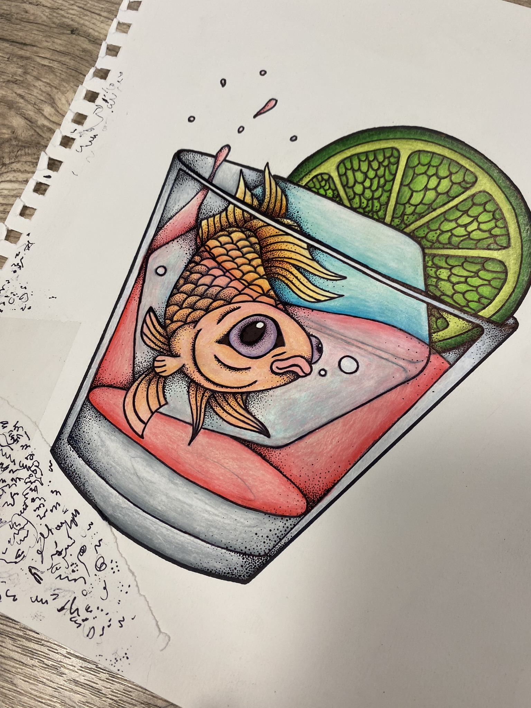
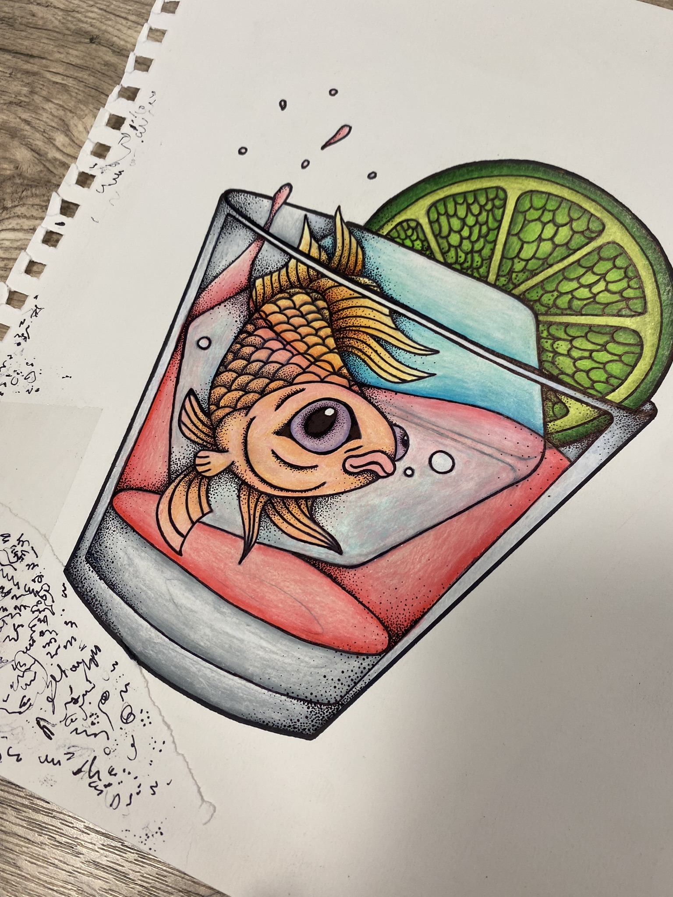
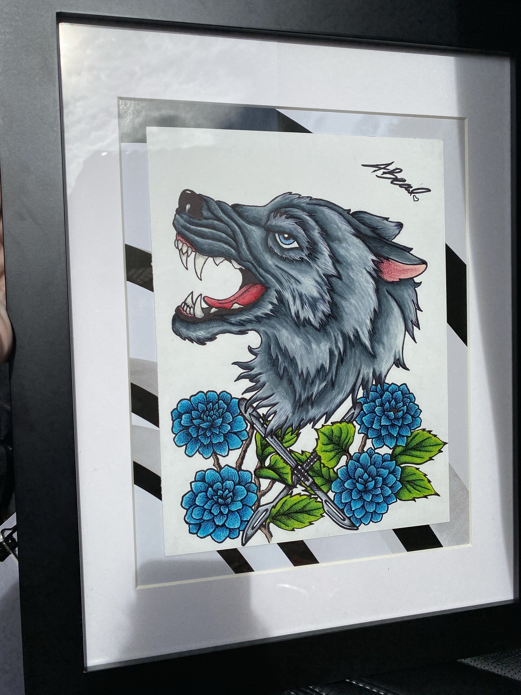
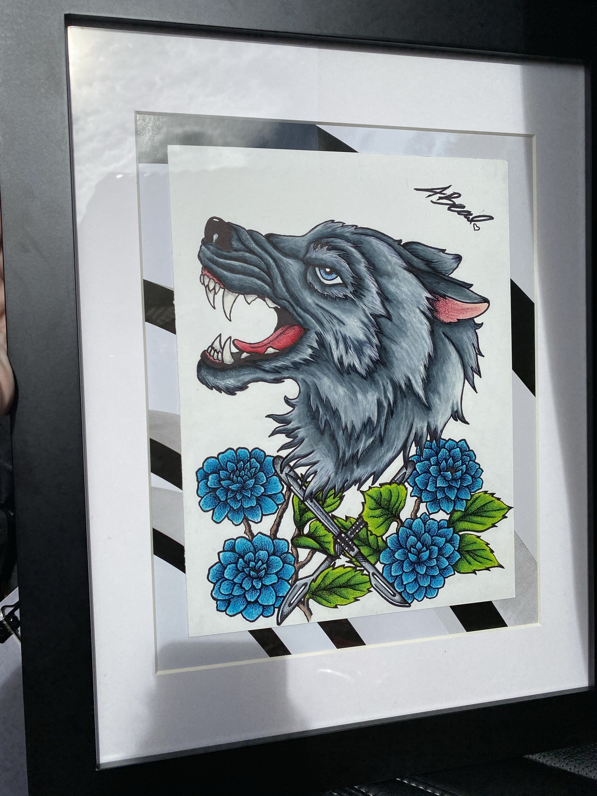

 


This cribbage board started as a simple wood square, carefully drilled for the game track. I hand-drew a detailed design featuring a lighthouse, waves, and a humpback whale, which I then burned into the wood using gunpowder for texture and depth. To add vibrant color, I applied UnicornSpit wood stain gels, and finished the piece with a clear coat of TotalBoat epoxy resin for a glossy, durable surface. Check out the In Process page to see detailed steps and progress shots of this project.
Stay tuned for upcoming projects and progress updates!